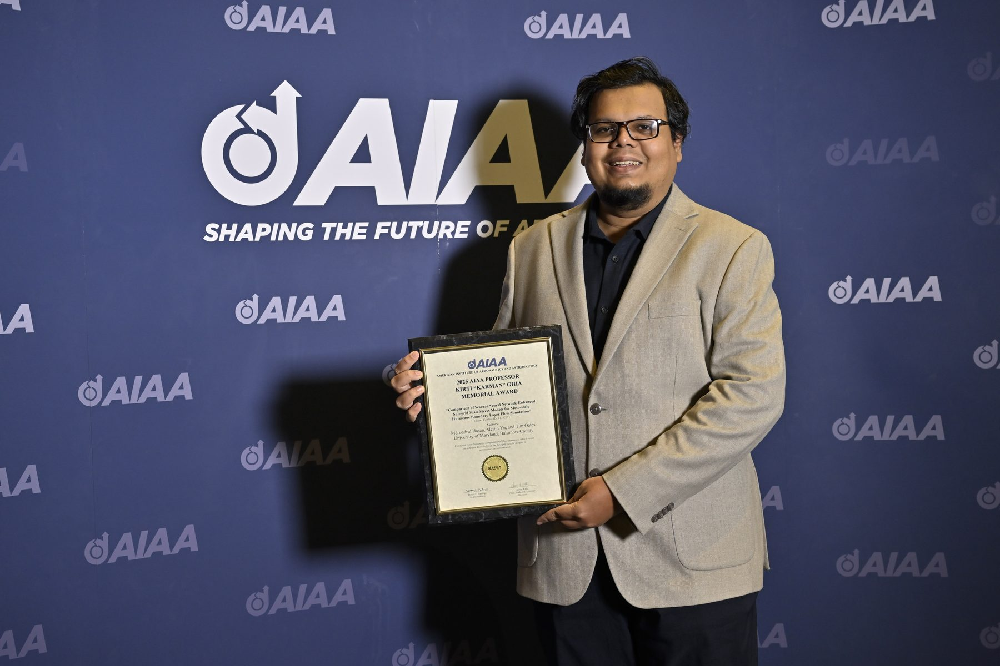

Research awards
ASME Fluids Engineering Division Ghia Scholar
Urmila and Karman Ghia Fluids Engineering Division Graduate Student Scholar Award, an ASME-sponsored recognition for international graduate students in the United States studying computational fluid dynamics. Assigned to the Computational Fluid Dynamics Technical Committee, ASME FEDSM 2026, Bellevue, WA.
COEIT Research Day Doctoral Student Award
For the poster “Machine learning-enhanced turbulence modeling for hurricane boundary layer simulations,” COEIT Research Day, UMBC, May 2026.
AIAA Professor Kirti “Karman” Ghia Memorial Award
Inaugural recipient, awarded by the AIAA Fluid Dynamics Technical Committee at SciTech 2025 for the best student paper, “Comparison of several neural network-enhanced sub-grid scale stress models for mesoscale hurricane boundary layer flow simulation” (AIAA 2025-2212). Listed among AIAA's 2025 best professional and student papers in Aerospace America and marked as a Best Paper on AIAA Aerospace Research Central.


Grants and scholarships
Graduate Student Association Professional Development Grant
UMBC. Awarded in December 2024, May 2025 and May 2026 to support professional development and thesis-related research expenses.
University Technical Scholarship
Bangladesh University of Engineering and Technology, Dhaka.